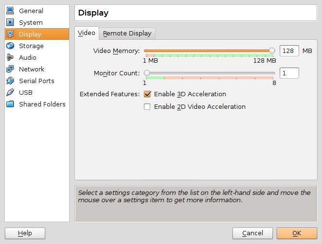

Virtualbox is virtualization software that allows a Linux user to HOST multiple GUEST operating systems as virtual machines (VMs). Its a cool tool for playing with different Linux distros and experimenting with configurations.
Let's go!
In this HOWTO I install Virtualbox on a 64-bit Ubuntu HOST and create an Ubuntu GUEST virtual machine.
0. Install VirtualBox on HOST
$ sudo apt install build-essential dkms module-assistant linux-headers-$(uname -r)
$ sudo apt install virtualbox virtualbox-dkms virtualbox-qt
Virtualbox kernel modules are built via Dynamic Kernel Module Support (DKMS). After installing the virtualbox packages the vbox modules should be auto-built and -loaded:
$ lsmod | grep vbox
vboxpci 19066 0
vboxnetadp 13155 0
vboxnetflt 23571 0
vboxdrv 190057 4 vboxnetflt,vboxnetadp,vboxpci
I add my USERNAME to the vboxusers group:
$ sudo adduser USERNAME vboxusers
1. Create the Ubuntu GUEST
Default Machine Folder where VM images are stored is ~/Virtualbox VMs (this can be modified in File->Preferences->General).
See the User Manual for creating a GUEST virtual machine. I use the mini.iso installer to create a new virtual machine with a minimal system configuration.
2. GUEST additions
Guest Additions provide extra features such as the ability to tweak display settings and add a shared folder that can accessed by both HOST and GUEST machines.
Install on the new Ubuntu GUEST:
$ sudo apt install build-essential module-assistant linux-headers-$(uname -r) dkms
$ sudo apt install virtualbox-guest-{dkms,utils,x11}
$ sudo m-a prepare
$ sudo adduser USERNAME vboxsf
If the virtualbox modules need to be rebuilt for any reason for the running kernel:
$ uname -r | sudo xargs -n1 /usr/lib/dkms/dkms_autoinstaller start
Reboot GUEST and vbox drivers should now be loaded:
$ lsmod | grep vbox
vboxguest
vboxsf
vboxvideo
3. Extra configuration
3.1 Display
Tweak display settings by going to the Virtualbox Machine->Settings...->Display setting and move the slider to add more video memory and enable 3d acceleration.
With VirtualBox guest additions the display and resolution can be changed when running X:
$ ps aux | grep VBox
/usr/sbin/VBoxService
/usr/bin/VBoxClient --clipboard
/usr/bin/VBoxClient --display
/usr/bin/VBoxClient --seamless
If GUEST does not use a graphical login manager to launch its desktop then modify $HOME/.xinitrc to start VBoxClient services:
VBoxClient --clipboard &
VBoxClient --display &
VBoxClient --seamless &
3.2 Console
Ubuntu GUEST in console mode defaults to a small 80x40 window. Resize by rebooting GUEST and:
- GRUB screen: hit c to enter command mode
- grub>: run vbeinfo to display supported resolutions (example: 1152x864)
- /etc/default/grub: add ...
- GRUB_CMDLINE_LINUX_DEFAULT="nomodeset"
- GRUB_GFXMODE=1152x864
- GRUB_GFXPAYLOAD_LINUX=keep (Helpful!)
- save changes: run update-grub and reboot
3.4 SSH from HOST to GUEST
Host-only networking with Virtualbox was a big help getting this properly configured.
Scenario: I want to SSH from my HOST to GUEST. Default configuration supplies GUEST with a NAT interface for internet access but no HOST<->GUEST connectivity. A solution for local access is creating a host-only adapter.
Host
Navigate to Virtualbox's File->Preferences->Network, select Host-only Networks, click Adds new host-only network to create vboxnet0. Default setup is interface address 192.168.56.1 with DHCP enabled.
Select the GUEST VM and in Machine->Settings->Network click on Adapter 2, enable network adapter attached to Host-only Adapter, and select vboxnet0.
Guest
Boot the VM and confirm the new interface has been created. Add the interface to /etc/network/interfaces (example: enp0s8) ...
auto enp0s8
iface enp0s8 inet dhcp
Install the SSH server ...
$ sudo apt install openssh-server
Reboot GUEST. The second interface has been assigned address 192.168.56.101 by DHCP and can now be accessed from HOST via SSH.
Optional: Assign GUEST a static address outside the range of the Virtualbox DHCP server (101-254 by default) ...
allow-hotplug enp0s8
#iface enp3s0 inet dhcp
iface enp0s8 inet static
address 192.168.56.50
netmask 255.255.255.0
network 192.168.56.0
broadcast 192.168.56.255
... and modify /etc/hosts on HOST by adding the VM static address.
Happy hacking!